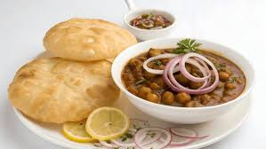

⬅ Back to Home
Chole Bhature

Description
North India's most loved breakfast — spicy chole served with hot fluffy bhature!
Ingredients
- Boiled chickpeas
- Onion, tomato & spices
- Bhature dough
Steps
- Cook chole with onion, tomato & spices.
- Roll bhature and deep fry till fluffy.
- Serve hot with onions & pickle!